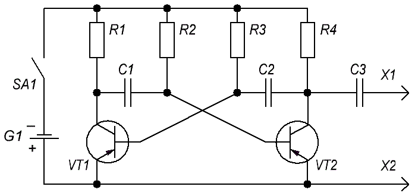

Генератор сигналов на мультивибраторе

Таблица 1
| Позиционное обозначение |
Наименование | Значение | Количество |
|---|---|---|---|
| С1, C2 | Конденсатор | 0,01 мкФ | 2 |
| C3 | Конденсатор | 0,05 мкФ | 1 |
| G1 | Элемент питания | 1,5 В | 1 |
| R1, R4 | Резистор | 4,7 кОм | 2 |
| R2, R3 | Резистор | 100 кОм | 2 |
| VT1, VT2 | Транзистор биполярный | МП39 - МП42 | 2 |
| S1 | Выключатель | 1 |
Принципиальная схема устройства представляет собой мультивибратор. Он генерирует колебания не только какой-то одной, основной частоты, но и множество гармоник, вплоть до частот коротковолнового диапазона.
Напряжение сигнала снимается с резистора R4, являющегося нагрузкой транзистора VT2, и через разделительный конденсатор С3 подается на вход проверяемого усилителя или приемника. Основная частота сигнала около 1 кГц, амплитуда выходного сигнала около 0,5 В.
Транзисторы VТ1 и VТ2 — любые маломощные низкочастотные, с любым коэффициентом h21э. Важно лишь, чтобы они были исправными. Правильно собранный прибор начинает работать сразу после включения питания и никакой наладки не требует. Для проверки работы генератора необходимо подключить к его выходу высокоомные телефоны — в телефонах будет слышен звук средней тональности. Частоту основных колебаний генератора можно изменить использованием в нем конденсаторов С1 и С2 других емкостей. С увеличением емкостей этих конденсаторов частота колебаний уменьшается, а с уменьшением — увеличивается.
Напряжение питания - 1,5 В. Ток, потребляемый генератором, не превышает 0,5 мА.
Пюсовой проводник выхода генератора можно снабдить зажимом «крокодил», а второй проводник, идущий от конденсатора С3, сделать в виде щупа.
Детали устройства можно cмонтировать плотно на узкой плате и разместить ее в корпусе от электролитического конденсатора больших размеров.